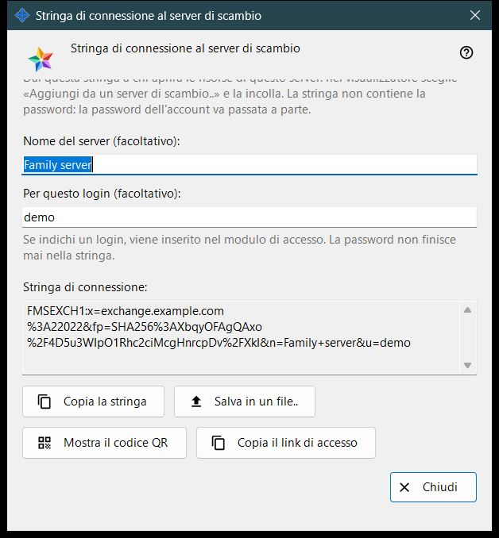
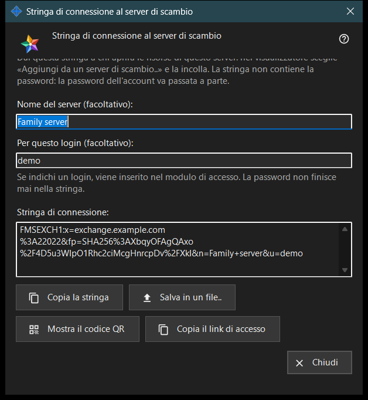

Stringa di connessione al server di scambio
Scopo
Questa finestra crea la stringa di connessione con cui gli altri dispositivi trovano questo server di scambio e ne verificano il certificato. Si apre con «Stringa di connessione e codice QR..» nelle impostazioni del server di scambio o nel benvenuto del server al primo avvio. La finestra non modifica alcuna impostazione.


In questo ordine
- Controlla che il server abbia un certificato e che sia impostato l'indirizzo per i client.
- Apri la finestra: la stringa compare subito.
- Se vuoi, digita il nome del server e un login; la stringa viene ricreata un attimo dopo che hai smesso di digitare.
- Copia la stringa, salvala in un file, mostra il suo codice QR oppure copia il link di accesso.
- Consegna il risultato all'altra persona e passa la password dell'account separatamente.
- Premi «Chiudi».
Gli elementi
Quando il pulsante è attivo
Il pulsante «Stringa di connessione e codice QR..» è attivo solo quando il server ha un certificato ed è impostato l'indirizzo per i client. Con l'indirizzo vuoto il pulsante resta disattivato e il suggerimento sotto di esso dice «Imposta prima l'indirizzo per i client: senza non si può creare la stringa di connessione.» Dentro la finestra i pulsanti restano disattivati finché non c'è una stringa.
Nome del server e login
«Nome del server (facoltativo):» accetta fino a 64 caratteri e viene salvato nella stringa come nome del server. «Per questo login (facoltativo):» accetta da 3 a 64 caratteri (a-z, 0-9, punto, trattino basso, trattino) e viene inserito nel modulo di accesso del dispositivo che usa la stringa. Una password non entra mai nella stringa.
Stringa di connessione
Il campo di sola lettura «Stringa di connessione:» mostra il risultato: l'indirizzo per i client, l'impronta del certificato e il nome e il login facoltativi. Il dispositivo che riceve la stringa si fida dell'impronta in essa contenuta, quindi nessuno deve confrontarla a mano.
Copia e salvataggio
«Copia la stringa» la mette negli appunti come testo normale, perché non è un segreto, e la riga sotto dice «La stringa è stata copiata.» «Salva in un file..» scrive un file di testo .fmsexch (nome suggerito exchange-server.fmsexch) e mostra il suo percorso; l'altro dispositivo lo legge con «Apri file..» nella sua finestra dell'account di scambio. Se gli appunti sono occupati o il file non può essere scritto, una riga lo segnala.
Codice QR e link di accesso
«Mostra il codice QR» apre un'immagine della stessa stringa da scansionare; indica un server e non dà accesso a nulla. «Copia il link di accesso» compare solo quando questo server offre un client web; copia un link per il browser che contiene la stessa stringa.
Se la stringa non può essere creata
Una riga nel colore di avviso indica la causa: il nome o il login è fuori dai limiti; il server non ha un certificato (avvia il server una volta); oppure il server di scambio non ha risposto. Correggi la causa e la stringa viene ricreata. «Chiudi» termina la finestra; il nome e il login non vengono salvati.
Impostazioni del gestore · Impostazioni condivisione SFTP · Impostazioni server di scambio